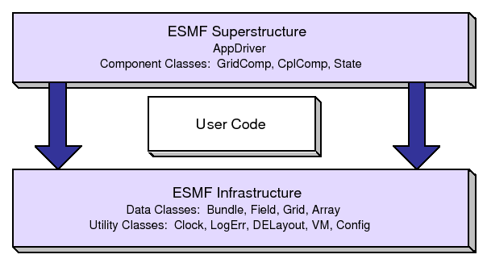

The Earth System Modeling Framework (ESMF) is a suite of software tools for developing high-performance, multi-component Earth science modeling applications. Such applications may include a few or dozens of components representing atmospheric, oceanic, terrestrial, or other physical domains, and their constituent processes (dynamical, chemical, biological, etc.). Often these components are developed by different groups independently, and must be ``coupled'' together using software that transfers and transforms data among the components in order to form functional simulations.
ESMF supports the development of these complex applications in a number of ways. It introduces a set of simple, consistent component interfaces that apply to all types of components, including couplers themselves. These interfaces expose in an obvious way the inputs and outputs of each component. It offers a variety of data structures for transferring data between components, and libraries for regridding, time advancement, and other common modeling functions. Finally, it provides a growing set of tools for using metadata to describe components and their input and output fields. This capability is important because components that are self-describing can be integrated more easily into automated workflows, model and dataset distribution and analysis portals, and other emerging ``semantically enabled'' computational environments.
ESMF is not a single Earth system model into which all components must fit, and its distribution doesn't contain any scientific code. Rather it provides a way of structuring components so that they can be used in many different user-written applications and contexts with minimal code modification, and so they can be coupled together in new configurations with relative ease. The idea is to create many components across a broad community, and so to encourage new collaborations and combinations.
ESMF offers the flexibility needed by this diverse user base. It is tested nightly on more than two dozen platform/compiler combinations; can be run on one processor or thousands; supports shared and distributed memory programming models and a hybrid model; can run components sequentially (on all the same processors) or concurrently (on mutually exclusive processors); and supports single executable or multiple executable modes.
ESMF's generality and breadth of function can make it daunting for the novice user. To help users navigate the software, we try to apply consistent names and behavior throughout and to provide many examples. The large-scale structure of the software is straightforward. The utilities and data structures for building modeling components are called the ESMF infrastructure. The coupling interfaces and drivers are called the superstructure. User code sits between these two layers, making calls to the infrastructure libraries underneath and being scheduled and synchronized by the superstructure above. The configuration resembles a sandwich, as shown in Figure 1.
ESMF users may choose to extensively rewrite their codes to take advantage of the ESMF infrastructure, or they may decide to simply wrap their components in the ESMF superstructure in order to utilize framework coupling services. Either way, we encourage users to contact our support team if questions arise about how to best use the software, or how to structure their application. ESMF is more than software; it's a group of people dedicated to realizing the vision of a collaborative model development community that spans insitutional and national bounds.
ESMF has a complete set of Fortran interfaces and some C interfaces. This ESMF Reference Manual is a listing of ESMF interfaces for Fortran.1
Interfaces are grouped by class. A class is comprised of the data and methods for a specific concept like a physical field. Superstructure classes are listed first in this Manual, followed by infrastructure classes.
The major classes in the ESMF superstructure are Components, which usually represent large pieces of functionality such as atmosphere and ocean models, and States, which are the data structures used to transfer data between Components. There are both data structures and utilities in the ESMF infrastructure. Data structures include multi-dimensional Arrays, Fields that are comprised of an Array and a Grid, and collections of Arrays and Fields called ArrayBundles and FieldBundles, respectively. There are utility libraries for data decomposition and communications, time management, logging and error handling, and application configuration.
|  |
More information on the ESMF project as a whole is available on the ESMF website, http://www.earthsystemmodeling.org. The website includes release notes and known bugs for each version of the framework, supported platforms, project history, values, and metrics, related projects, the ESMF management structure, and more. The ESMF User's Guide contains build and installation instructions, an overview of the ESMF system and a description of how its classes interrelate (this version of the document corresponds to the last public version of the framework). Also available on the ESMF website is the ESMF Developer's Guide that details ESMF procedures and conventions.
The following conventions for fonts and capitalization are used
in this and other ESMF documents.
| Style | Meaning | Example |
| italics | documents | ESMF Reference Manual |
| courier | code fragments | ESMF_TRUE |
| courier() | ESMF method name | ESMF_FieldGet() |
| boldface | first definitions | An address space is ... |
| boldface | web links and tabs | Developers tab on the website |
| Capitals | ESMF class name | DataMap |
ESMF class names frequently coincide with words commonly used within the Earth system domain (field, grid, component, array, etc.) The convention we adopt in this manual is that if a word is used in the context of an ESMF class name it is capitalized, and if the word is used in a more general context it remains in lower case. We would write, for example, that an ESMF Field class represents a physical field.
Diagrams are drawn using the Unified Modeling Language (UML). UML is a visual tool that can illustrate the structure of classes, define relationships between classes, and describe sequences of actions. A reader interested in more detail can refer to a text such as The Unified Modeling Language Reference Manual. [27]
Method names begin with ESMF_, followed by the class name, followed by the name of the operation being performed. Each new word is capitalized. Although Fortran interfaces are not case-sensitive, we use case to help parse multi-word names.
For method arguments that are multi-word, the first word is lower case and subsequent words begin with upper case. ESMF class names (including typed flags) are an exception. When multi-word class names appear in argument lists, all letters after the first are lower case. The first letter is lower case if the class is the first word in the argument and upper case otherwise. For example, in an argument list the DELayout class name may appear as delayout or srcDelayout.
Most Fortran calls in the ESMF are subroutines, with any returned values passed through the interface. For the sake of convenience, some ESMF calls are written as functions.
A typical ESMF call looks like this:
call ESMF_<ClassName><Operation>(classname, firstArgument,
secondArgument, ..., rc)
where
<ClassName> is the class name,
<Operation> is the name of the action to be performed,
classname is a variable of the derived type associated
with the class,
the arg* arguments are whatever other variables are required
for the operation,
and rc is a return code.
The ESMF Application Programming Interface (API) is based on the object-oriented programming concept of a class. A class is a software construct that's used for grouping a set of related variables together with the subroutines and functions that operate on them. We use classes in ESMF because they help to organize the code, and often make it easier to maintain and understand. A particular instance of a class is called an object. For example, Field is an ESMF class. An actual Field called temperature is an object. That is about as far as we will go into software engineering terminology.
The Fortran interface is implemented so that the variables associated with a class are stored in a derived type. For example, an ESMF_Field derived type stores the data array, grid information, and metadata associated with a physical field. The derived type for each class is stored in a Fortran module, and the operations associated with each class are defined as module procedures. We use the Fortran features of generic functions and optional arguments extensively to simplify our interfaces.
The modules for ESMF are bundled together and can be accessed with a single USE statement, USE ESMF_Mod.
ESMF defines a set of standard methods and interface rules that hold across the entire API. These are:
EXAMPLE
In this simple example, an ESMF Field is created with the name 'temp'.
USE ESMF_Mod
type (ESMF_Field) :: field
field = ESMF_FieldCreate('temp')
The ESMF contains two types of classes. Deep classes require ESMF_<Class>Create() and ESMF_<Class>Destroy() calls. They take significant time to set up and should not be created in a time-critical portion of code. Deep objects persist even after the method in which they were created has returned. Most classes in ESMF, including Fields, FieldBundles, Arrays, ArrayBundles, Grids, and Clocks, fall into this category.
Shallow classes do not require ESMF_<Class>Create() and ESMF_<Class>Destroy() calls. They can simply be declared and their values set using an ESMF_<Class>Set() call. Examples of shallow classes are Times, TimeIntervals, and ArraySpecs. Shallow classes do not take long to set up and can be declared and set within a time-critical code segment. Shallow objects stop existing when the method in which they were declared has returned.
An exception to this is when a shallow object, such as a Time, is stored in a deep object such as a Clock. The Clock then carries a copy of the Time in persistent memory. The Time is deallocated with the ESMF_ClockDestroy() call.
See Section 10, Overall Design and Implementation Notes, for a brief discussion of deep and shallow classes from an implementation perspective. For an in-depth look at the design and inter-language issues related to deep and shallow classes, see the ESMF Implementation Report.
The following are special methods which, in one case, are required by any application using ESMF, and in the other case must be called by any application that is using ESMF Components.
The ESMF API is organized around an hierarchy of classes that contain model data. The operations that are performed on model data, such as regridding, redistribution, and halo updates, are methods of these classes.
The main data classes in ESMF, in order of increasing complexity, are:
Underlying these data classes are native language arrays. ESMF allows you to reference an existing Fortran array to an ESMF Array or Field so that ESMF data classes can be readily introduced into existing code. You can perform communication operations directly on Fortran arrays through the VM class, which serves as a unifying wrapper for distributed and shared memory communication libraries.
Like the hierarchy of model data classes, ranging from the simple to the complex, ESMF is organized around an hierarchy of classes that represent different spaces associated with a computation. Each of these spaces can be manipulated, in order to give the user control over how a computation is executed. For Earth system models, this hierarchy starts with the address space associated with the computer and extends to the physical region described by the application. The main spatial classes in ESMF, from those closest to the machine to those closest to the application, are:
In order to define how the index spaces of the spatial classes relate to each other, we require either implicit rules (in which case the relationship between spaces is defined by default), or special Map arrays that allow the user to specify the desired association. The form of the specification is usually that the position of the array element carries information about the first object, and the value of the array element carries information about the second object. ESMF includes a distGridToArrayMap, a gridToFieldMap, a distGridToGridMap, and others.
It can be useful to make small packets of descriptive parameters. ESMF has one of these:
There are a number of utilities in ESMF that can be used independently. These are:
ESMF data objects such as Fields are distributed over DEs, with each DE getting a portion of the data. Depending on the task, a local or global view of the object may be preferable. In a local view, data indices start with the first element on the DE and end with the last element on the same DE. In a global view, there is an assumed or specified order to the set of DEs over which the object is distributed. Data indices start with the first element on the first DE, and continue across all the elements in the sequence of DEs. The last data index represents the number of elements in the entire object. The DistGrid provides the mapping between local and global data indices.
The convention in ESMF is that entities with a global view have no prefix. Entities with a DE-local (and in some cases, PET-local) view have the prefix ``local.''
Just as data is distributed over DEs, DEs themselves can be distributed over PETs. This is an advanced feature for users who would like to create multiple local chunks of data, for algorithmic or performance reasons. Local DEs are those DEs that are located on the local PET. Local DE labeling always starts at 0 and goes to localDeCount-1, where localDeCount is the number of DEs on the local PET. Global DE numbers also start at 0 and go to deCount-1. The DELayout class provides the mapping between local and global DE numbers.
The basic rule of allocation and deallocation for the ESMF is: whoever allocates it is responsible for deallocating it.
ESMF methods that allocate their own space for data will deallocate that space when the object is destroyed. Methods which accept a user-allocated buffer, for example ESMF_FieldCreate() with the ESMF_DATA_REF flag, will not deallocate that buffer at the time the object is destroyed. The user must deallocate the buffer when all use of it is complete.
Classes such as Fields, FieldBundles, and States may have Arrays, Fields, Grids and FieldBundles created externally and associated with them. These associated items are not destroyed along with the rest of the data object since it is possible for the items to be added to more than one data object at a time (e.g. the same Grid could be part of many Fields). It is the user's responsibility to delete these items when the last use of them is done.
The equal sign operator in ESMF does not generate any special behavior on the part of the framework. If the user decides to set one object equal to another, the internal contents will simply be copied. That means that if there is a pointer within the object being copied, the pointer will be replicated and the data pointed to will be referenced by the object copy. As a matter of style and safety, users should try to avoid exploiting such implicit behavior. A preferable approach is to use a class creation or duplication method. Unfortunately, not all classes have duplication methods yet.
Attributes are (name, value) pairs, where the name is a character string and the value can be either a single value or list of int/I*4, double/R*8, logical (ESMF_Logical), or char */character values. Attributes can be associated with Fields, FieldBundles, and States. Mixed types are not allowed in a single attribute, and all attribute names must be unique within a single object. Attributes are set by name, and can be retrieved either directly by name or by querying for a count of attributes and retrieving names and values by index number.
Depending on the requirements of the application, the user may want to begin integrating ESMF in either a top-down or bottom-up manner. In the top-down approach, tools at the superstructure level are used to help reorganize and structure the interactions among large-scale components in the application. It is appropriate when interoperability is a primary concern; for example, when several different versions or implementations of components are going to be swapped in, or a particular component is going to be used in multiple contexts. Another reason for deciding on a top-down approach is that the application contains legacy code that for some reason (e.g., intertwined functions, very large, highly performance-tuned, resource limitations) there is little motivation to fully restructure. The superstructure can usually be incorporated into such applications in a way that is non-intrusive.
In the bottom-up approach, the user selects desired utilities (data communications, calendar management, performance profiling, logging and error handling, etc.) from the ESMF infrastructure and either writes new code using them, introduces them into existing code, or replaces the functionality in existing code with them. This makes sense when maximizing code reuse and minimizing maintenance costs is a goal. There may be a specific need for functionality or the component writer may be starting from scratch. The calendar management utility is a popular place to start.
The following is a typical set of steps involved in adopting the ESMF superstructure. The first two tasks, which occur before an ESMF call is ever made, have the potential to be the most difficult and time-consuming. They are the work of splitting an application into components and ensuring that each component has well-defined stages of execution. ESMF aside, this sort of code structure helps to promote application clarity and maintainability, and the effort put into it is likely to be a good investment.
Valid values are:
Valid values are:
For VM communication calls the ESMF_BLOCKING and ESMF_NONBLOCKING modes provide behavior that is practically identical to the blocking and non-blocking communication calls familiar from MPI.
The details of how the blocking mode setting affects Component methods are more complex. This is a consequence of the fact that ESMF Components can be executed in threaded or non-threaded mode. However, in the default, non-threaded case, where an ESMF application runs as a pure MPI or mpiuni program, most of the complexity is removed.
See the VM item in 6.5 for an explanation of the PET and VAS concepts used in the following descriptions.
Valid values are:
Component calls: The called method will block until all PETs of the VM have completed the operation.
For a non-threaded, pure MPI component the behavior is identical to calling a barrier before returning from the method. Generally this kind of rigid synchronization is not the desirable mode of operation for an MPI application, but may be useful for application debugging. In the opposite case, where all PETs of the component are running as threads in shared memory, i.e. in a single VAS, strict synchronization of all PETs is required to prevent race conditions.
Component calls: The called method will block each PET until all operations in the PET-local VAS have completed.
This mode is a combination of ESMF_BLOCKING and ESMF_NONBLOCKING modes. It provides a default setting that leads to the typically desirable behavior for pure MPI components as well as those that share address spaces between PETs.
For a non-threaded, pure MPI component each PET returns independent of the other PETs. This is generally the expected behavior in the pure MPI case where calling into a component method is practically identical to a subroutine call without extra synchronization between the processes.
In the case where some PETs of the component are running as threads in shared memory ESMF_VASBLOCKING becomes identical to ESMF_BLOCKING within thread groups, to prevent race conditions, while there is no synchronization between the thread groups.
Component calls: The behavior of this mode is fundamentally different for threaded and non-threaded components, independent on whether the components use shared memory or not. The ESMF_NONBLOCKING mode is the most complex mode for calling component methods and should only be used if the extra control, described below, is absolutely necessary.
For non-threaded components (the ESMF default) calling a component method with ESMF_NONBLOCKING is identical to calling it with ESMF_VASBLOCKING. However, different than for ESMF_VASBLOCKING, a call to ESMF_GridCompWait() or ESMF_CplCompWait() is required in order to deallocate memory internally allocated for the ESMF_NONBLOCKING mode.
For threaded components the calling PETs of the parent component will not be blocked and return immediately after initiating the requested child component method. In this scenario parent and child components will run concurrently in identical VASs. This is the most complex mode of operation. It is unsafe to modify or use VAS local data that may be accessed by concurrently running components until the child component method has completed. Use the appropriate ESMF_GridCompWait() or ESMF_CplCompWait() method to block the local parent PET until the child component method has completed in the local VAS.
Valid values are:
Valid values are:
Valid values are:
Valid values are:
Valid values are:
Valid values are:
Valid values are:
Valid values are:
Valid values are:
Valid values are:
Valid values are:
Valid values are:
Valid values are:
Valid values are:
DESCRIPTION:
Supported ESMF type and kind combinations.
This is an ESMF derived type used for arguments to subroutines
and functions that specify or query a data precision and type.
These values cannot be used when declaring variables; see the next
section on Fortran Kinds for that.
Valid values are:
DESCRIPTION:
These are integer parameters of the proper type to be
used when declaring variables with a specific precision
in Fortran syntax. For example:
integer(ESMF_KIND_I4) :: myintegervariable real(ESMF_KIND_R4) :: myrealvariableThe Fortran 90 standard does not mandate what numeric values correspond to actual number of bytes allocated for the various kinds, so these are defined by ESMF to be correct across the different supported Fortran 90 compilers. Note that not all compilers support every kind listed below; in particular 1 and 2 byte integers can be problematic.
Valid values are:
DESCRIPTION:
The following parameters are available to allow detection of the
version of ESMF in use.
DESCRIPTION:
Different types of geometries upon which an ESMF Field or ESMF Fieldbundle may
be built.
Valid values are: